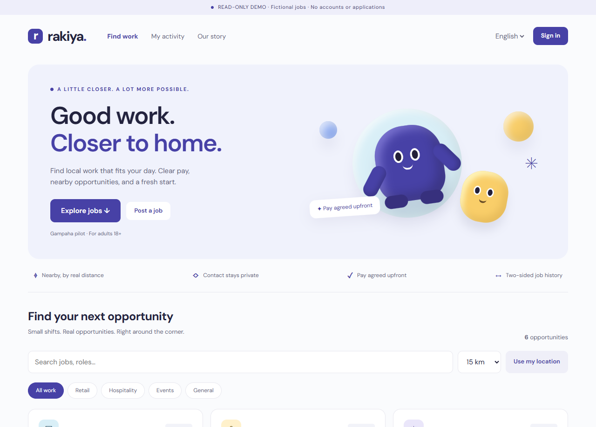
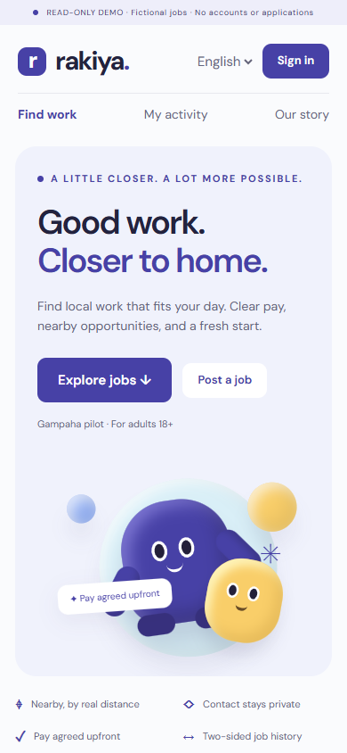

Find work nearby
Search by role, filter job categories and explore opportunities by distance.
A simpler way for people to find short-term work—and for local businesses to find an extra pair of hands.
Gampaha pilot concept · Adults 18+ · Development preview
Designed for students, daily workers, local shops and event organisers. Rakiya brings discovery, applications and job history into one place.

Search by role, filter job categories and explore opportunities by distance.
In the local app, phone details are visible to matched parties after acceptance.
Employer work confirmation and worker compensation confirmation form a two-sided job record.

MOBILE WEB INTERFACEA shared React Native app brings the Rakiya workflow to native Android and iPhone interfaces.
Development preview through Expo Go. Android and iOS code bundles validated; physical-device testing is pending. No standalone APK, iPhone download or app-store release is available yet. Image shown: mobile web interface.
From a hackathon proposal to a locally testable marketplace, web interface and native mobile source.
Django · SQLite · JavaScript · Responsive CSS
Run the project ↗React Native · Expo · TypeScript · Expo Router
Browse the mobile app ↗29 backend tests, browser journey checks and native bundle checks.
View automated checks ↗Development continues: phone verification, account recovery, production hosting, dependency security fixes and real pilot validation. Read the build status ↗
Founder & Product Lead · Sri Lanka
Studying Accounting Information Systems at the University of Kelaniya and building practical digital tools around real local problems.
Visit my GitHub profile ↗